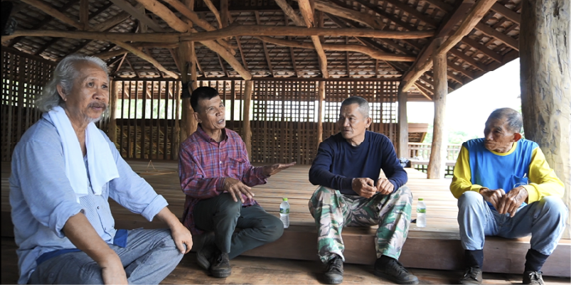
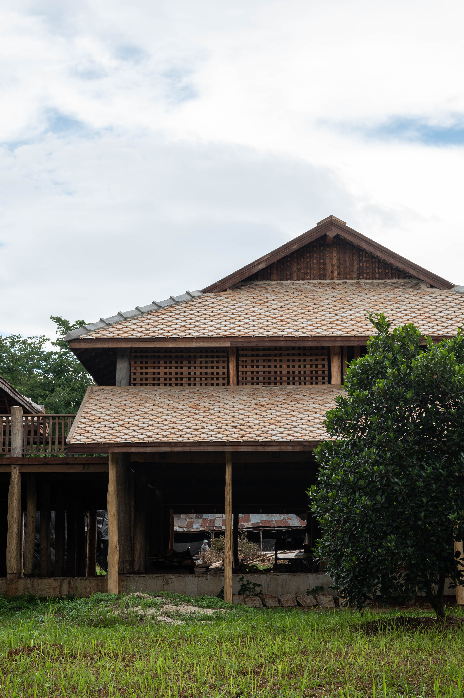

สล่าสมนึก
นายอินผาย พรมณี
สล่า-เรือน
จังหวัดเชียงราย

สล่าแมน พรหมมณี (อายุ 74 ปี) หลังจากจบเรียนมัธยมศึกษาที่ 4 ก็รับทำงานกับคุณพ่อและคุณลุง โดยตามไปรับเหมาสร้างเรือนไม้ โดยสร้างเรือนไม้ตั้งแต่สมัยหมู่บ้านมีเรือนไม้ จนปัจจุบันรื้อไป สร้างเป็นเรือนปูนหมด โดยในสมัยก่อนนั้นการสร้างบ้านสร้างเรือนใช้ไม้ใหญ่มาก ช่วงห่างของเสาก็ไม่มาก
สล่าสุทิศ จันทร์คำ (อายุ 66 ปี) แต่เดิมเป็นช่างปูน พึ่งย้ายมาทำงานไม้ ได้ 2 ปี โดยสล่าสมนึกได้ชักชวนมา เพื่อฝึกฝีมือ

โดยที่อาจารย์สมลักษณ์เลือกสร้างเรือนไม้ เนื่องจากแต่เดิมที่เป็นผู้อาสานั้น ได้มีความเกี่ยวเนื่องกับอาคารไม้ ทั้งโรงพิมพ์ โรงเรือนเรียนหนังสือ ก็มักเป็นผู้อาสาออกแบบสร้างในหลากหลายพื้นที่อพยพ จึงทำให้เกิดความรัก ความผูกพันกับวัสดุธรรมชาติ ทั้งการปั้นดิน และ การสร้างสถาปัตยกรรมไม้ที่หลากหลายในปัจจุบันและนอกเหนือ จากความรักความผูกพันแล้วยังเลือกใช้ไม้เก่า เนื่องจากต้องการนำไม้กลับมาใช้ใหม่ เพื่อให้เกิดประโยชน์สูงสุด ในวงจรชีวิตไม้ ซึ่งผู้ที่ควรเห็นคุณค่าของไม้คือผู้ที่ปลูกไม้ ดังนั้นจึงอยากให้งานไม้มีคุณค่าในหมู่ชาวบ้านหมู่คนปลูกไม้ มากกว่าเพื่อการธุรกิจโดยแนวความคิดอยากให้พื้นที่ใต้ถุนกว้าง สามารถใช้งานด้านล่างได้ ไม่มีห้องน้ำ โดยนำเรือนไทลื้อมาเป็นต้นแบบ
“เนื่องจากหลังคาไทลื้อจะครอบพื้นที่เรือน ให้ความรู้สึกสบาย ร่มเย็น ผนังไม่ตีทึบ ความเป็นธรรมชาติสูง ไม่ต้องประณีต ซึ่งเกิดจากการตกตะกอนจากการลงพื้นที่เที่ยวที่สิบสองปันนา โดยวางทิศทางเรือนให้สอดคล้องกับการเดินของพื้นดิน (การใช้งาน) ”